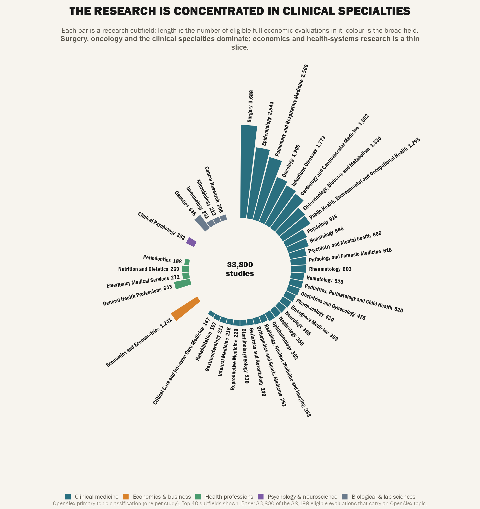
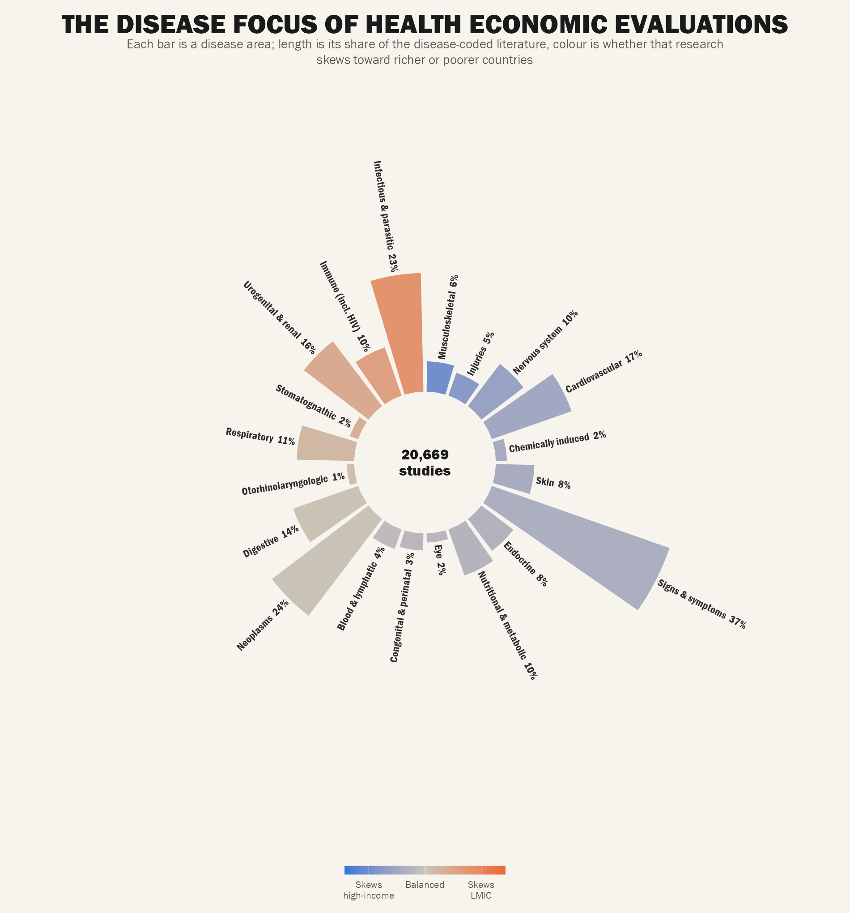
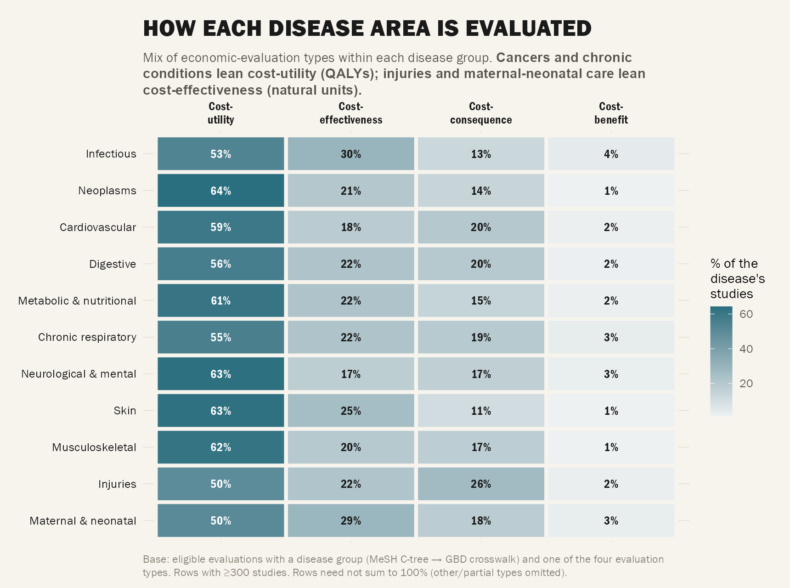
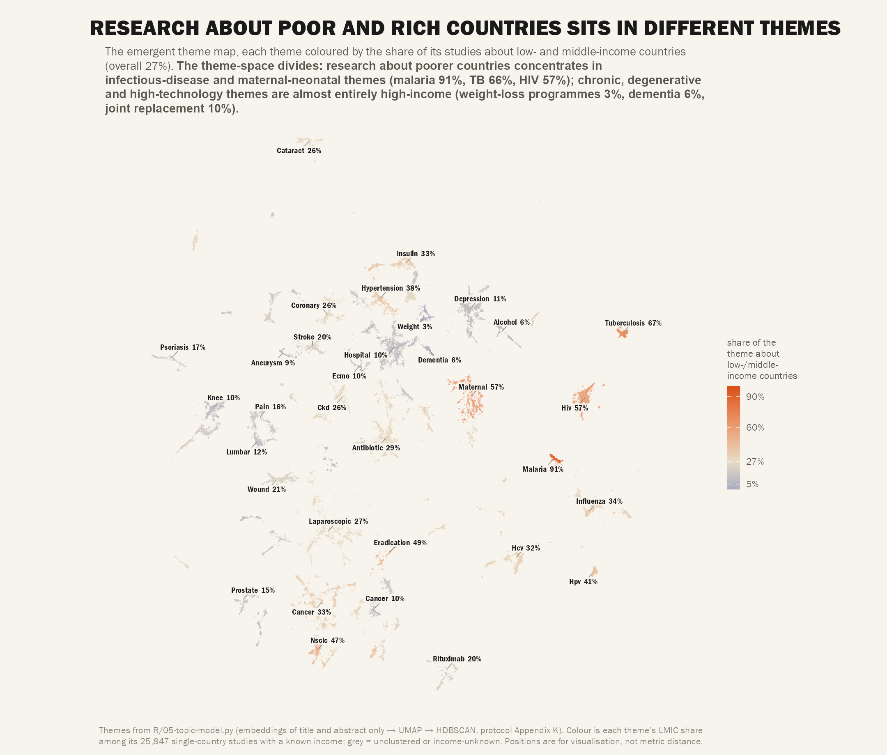
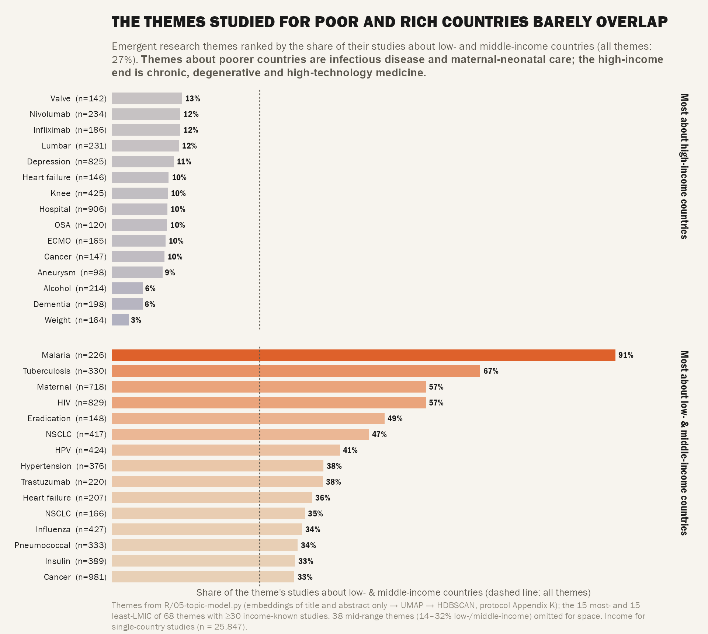
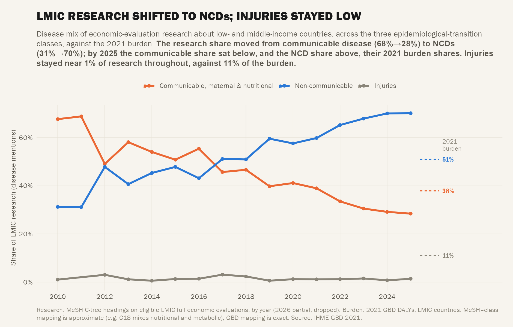

Act II — Topic & Disease
Act II: Topic & Disease
What does the field actually study? Variables: OpenAlex cluster + primary_topic (88%); MeSH C-tree (63%), E-tree (57%), N-tree (62%). Harvested subset — declare base.

C5 — Topic Landscape (Circular Bar)
OpenAlex subfields grouped by field — circular bar (rounded form). The Act II hero showing what research areas dominate.
Clinical medicine, biology, and pharmacology dominate; economics and policy are smaller slices.

C6 — Disease Landscape (Share + Income Lean)
MeSH C-tree circular bar, coloured by LMIC/HIC lean. Shows which disease areas dominate and whether they skew rich or poor.
Infectious diseases lean LMIC; neoplasms, cardiovascular, musculoskeletal lean HIC. The lean is visible in the colour gradient.

C8 — Disease × Evaluation Method
Heat map: for each GBD disease group, the mix of economic-evaluation types. Rows with ≥300 studies.
Cancers and chronic conditions lean cost-utility (QALYs); injuries and maternal-neonatal care lean cost-effectiveness (natural units).

C31 — Thematic Landscape by Income (UMAP)
Emergent topic map (embeddings → UMAP → HDBSCAN) coloured by each theme’s LMIC share. Protocol Appendix K.
Theme-space segregates: LMIC themes = malaria 91%, TB 66%, HIV 57%, maternal 57%; HIC themes = obesity 3%, dementia 6%, arthroplasty 10%.

C32 — Emergent Themes Ranked by Income
Horizontal bar: 15 most- + 15 least-LMIC themes, coloured by share, faceted. Lancet-friendly league table of C31.
The two ends don’t overlap: LMIC themes 33–91%, HIC themes 3–13%. Research about poor and rich countries sits in completely different thematic spaces.

C29 — Epidemiological Transition Shift
LMIC research disease-mix (3 transition classes) over 2010–2026 vs 2021 burden. Communicable → NCD shift tracked against burden shares.
Research shifted communicable 68%→28% to NCDs 31%→70% (2010→2025), crossing burden shares. Injuries stayed ~1% throughout vs 11% burden.
Act II Summary
| Figure | Status | Strength | Key Message |
|---|---|---|---|
| C5 | ✅ Built | ★★★ Hero | OpenAlex topic circular bar |
| C6 | ✅ Built | ★★★ Hero | Disease C-tree + income lean |
| C7 | ❌ Dropped | — | E-tree swamped by “investigative techniques” (86%) |
| C8 | ✅ Built | ★★ Solid | Disease × method heat map |
| C9 | 🛠️ Buildable | ★ Thin | N-tree health-care arrangement |
| C31 | ✅ Built | ★★★ Hero | UMAP topic map coloured by LMIC share |
| C32 | ✅ Built | ★★★ Hero | League table of LMIC/HIC themes |
| C29 | ✅ Built | ★★★ Hero | Transition: injuries stuck at 1% vs 11% burden |
Previous: ← Act I: Field Shape • Next: Act III: Methods & Quality →